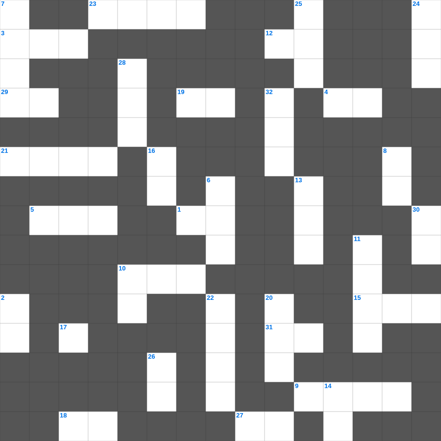

마가복음: 광풍을 잔잔케 하심
📌 서비스 정의
십자가로세로는 교회 주보와 주일학교에서 사용할 수 있는 성경 기반 가로세로 퍼즐 서비스입니다. 성경 인물, 사건, 핵심 구절을 바탕으로 제작되었습니다. 온라인 풀이 및 인쇄 기능을 제공합니다.
📖 마가복음란?
마가복음은 가장 짧고 속도감 있게 기록된 복음서로, 예수님을 고난받는 종이자 능력의 메시아로 강조하며 그분의 행동과 사역을 중심으로 전개됩니다.
📚 마가복음의 주요 사건·주제
예수님의 세례와 시험 · 여러 치유와 축귀 사역 · 변화산 사건 · 예루살렘 입성과 고난 · 십자가와 부활
무료로 즐기는 마가복음 마가복음 말씀 퀴즈! 35개의 힌트로 구성된 가로세로 낱말 퍼즐입니다. PC와 모바일 모두 지원되며, 정답을 바로 확인할 수 있어 혼자서도 쉽게 풀 수 있습니다.

📝 가로 힌트
1. 구원의 이것과 성령의 검
2. 공중에 나는 이것(다섯째 날)
3. 이스라엘이 광야에서 보낸 시간(년)
3. 이스라엘이 광야에서 보낸 년수
4. 내가 누구를 보내며 누가 우리를 위하여 이것할꼬
5. 한 해의 첫 열매를 드리는 절기
9. 예수님이 가르쳐 주신 기도
10. 심령이 이것한 자는 복이 있나니
12. 밭에 감추인 이것
15. 나는 알파와 이것이요
18. 기드온의 300 용사가 든 것: 항아리와 이것
19. 병 고치는 은사와 이것을 행함
21. 예수님을 은 30에 판 제자
23. 예수님이 태어나신 마을
27. 내가 곧 길이요 이것이요 생명이니
29. 여호와 이것: 치료하시는 하나님
31. 하나님이 세상을 이처럼 하사 독생자를 주셨으니
📝 세로 힌트
2. 보라 이전 것은 지나갔으니 보라 이것이 되었도다
6. 아론의 지팡이에서 핀 꽃
7. 범사에 이것하라
8. 나 외에는 다른 이것들을 네게 두지 말라
10. 의의 이것 신경(호심경)
11. 창세기부터 신명기까지의 5권
13. 어린 양의 보좌로부터 나오는 이것의 강
14. 열 처녀 비유에서 준비해야 했던 것
16. 성경의 맨 마지막 단어
17. 첫 번째 재앙: 강물이 이것이 됨
20. 메시아의 탄생을 예언한 평화의 선지자
22. 생명수 강가에 있는 이것
24. 모세가 십계명을 받은 산
25. 예수님이 변화되신 산
26. 나답과 아비후가 다른 불을 드리다 죽은 일
28. 제사장이 손발을 씻는 놋 그릇
30. 멜리데 섬에서 바울을 문 동물
32. 예수님이 세례받으실 때 성령이 이 모양으로 내려옴
🧑🏫 교회 교육 자료 활용
이 퍼즐은 주일학교 교재 추천 자료로 활용할 수 있고, 주일학교 주보에 넣기 좋은 분량으로 구성되어 있습니다. 수업용 주일학교 교안에 활동지로 붙이거나, 예배 후 복습용 주일학교 공과교재로 바로 사용할 수 있습니다.
🏷️ 키워드
마가복음 말씀 퀴즈, 마가복음, 십자가로세로, 성경퀴즈, 말씀퀴즈, 가로세로퍼즐, 주일학교 교재 추천, 주일학교 주보, 주일학교 교안, 주일학교 공과교재